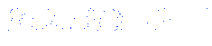
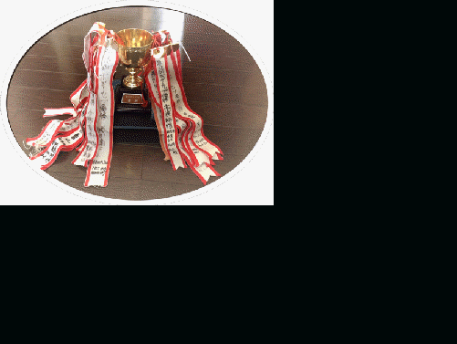

2025.9.14更新
■第30回の成績、写真を掲載しました。
！！ 第３０回の成績はこちら ！！
！！ 第３０回の写真はこちら ！！
初めてのコースでの第30回記念大会が無事に楽しく開催できたことが、幹事としては何よりも嬉しく、ほっとしました。
また来年集い、ボギーゴルフクラブの足跡を残していきましょうね。
2024.9.22更新
■第29回の成績、写真を掲載しました。
！！ 第２９回の成績はこちら ！！
！！ 第２９回の写真はこちら ！！
今回も懐かしく夜の部、昼の部と集うことができて楽しかったですね。
来年は記念大会ですね。折角なのでいつもとは少し違うことを考えてみようと思います。
と言って、安定の恒例イベントになるかも知れないですけど、また来年集いましょうね。
2023.10.8更新
■第28回の成績、写真を掲載しました。
！！ 第２８回の成績はこちら ！！
！！ 第２８回の写真はこちら ！！
4年ぶりにコンペが再開できたことがうれしいですね。
また来年集いましょう。
2019.9.15更新
■第27回の成績、写真を掲載しました。
！！ 第２７回の成績はこちら ！！
重要な夜の部は更新手つかずです．．．ゴメンなさい（苦笑）
https://photos.app.goo.gl/nrvHYjnCp1byPmam7
2018.9.21更新 ※9.23追記
■第26回の成績を掲載しました。
！！ 第２６回の成績はこちら ！！
会計報告はもうしばらくお待ちください．．．ゴメンなさいx2 （笑）
https://photos.app.goo.gl/PFZTp6e99amXWMNZA
2018.9.15更新
■第26回の写真を掲載しました。
！！ 第２６回の写真はこちら ！！
成績や会計報告はもうしばらくお待ちください．．．ゴメンなさい。
2017.11.18更新
■過去の成績をメンテしました。
！！ 過去の成績（チャート）はこちら ！！
過去の成績→チャート表示ボタン をクリックでも表示できます。
出場回数の順や各自のＨＣＰ推移などなかなか興味深いですよ。
2017.11.11更新
■第25回ボギーカップの結果および写真を掲載しました。
！！ 第２５回の写真はこちら ！！
過去の成績→第２５回ボタン をクリックでも表示できます。
＜管理人より＞
作業がやや手抜きになっていてゴメンなさい。
時間を見つけて、コツコツとメンテしていく予定... 予想...
願望...ですので温かい目で見てやって下さい（笑）
昨年同様、更新できているのは「過去の成績」と「記念撮影」のみです。
2017.8.13更新
■第1回、第2回の写真を掲載しました。
！！ 第1回の写真はこちら ！！
！！ 第2回の写真はこちら ！！
記念撮影→第1回ボタン あるいは 第2回ボタン をクリックでも表示できます。
＜管理人より＞
別件で昔の写真を探していたら思いがけなく貴重な写真が見つかりましたのでスキャンして保存しておきます。
皆さんの手元にも貴重な写真がありましたら提供をお願いします
2016.11.2更新
■第24回ボギーカップの結果および写真を掲載しました。
！！ 第２４回の結果はこちら ！！
過去の成績→第２４回ボタン をクリックでも表示できます。
＜管理人より＞
かなり手抜き作業になって恐縮です。どこか手直しが必要な個所がありましたら、遠慮なく教えて下さい。
昨年同様、更新できているのは「過去の成績」と「記念撮影」のみです。
2015.10.31更新
■第23回ボギーカップの結果および写真を掲載しました。
！！ 第２３回の結果はこちら ！！
過去の成績→第２３回ボタン をクリックでも表示できます。
＜管理人より＞
急いで更新したので、うまくリンクが出来ていない部分などありましたらお知らせ下さい。
更新できているのは「過去の成績」と「記念撮影」のみです。
2014.10.5更新
■ 第22回ボギーカップの写真（動画）を追加しました。
＞ タケちゃん、ムービーファイルありがとう。
！！ 第２２回の記念写真はこちら ！！
記念撮影→第２２回ボタン をクリックでも表示できます。
■ 近況情報３を追加しました。
若い女性との写真でニヤけているように見えるのは気のせいです。
澄んだ心で見て下さい（笑）
！！ 近況情報はこちら ！！
その他（近況）→情報３ をクリックでも表示できます。
2014.9.23更新
■ 第22回ボギーカップの結果および写真を掲載しました。
！！ 第２２回の結果はこちら ！！
過去の成績→第２２回ボタン をクリックでも表示できます。
＜管理人より＞
急いで更新したので、うまくリンクが出来ていない部分などありましたらお知らせ下さい。
更新できているのは「過去の成績」と「記念撮影」のみです。
2013.9.23更新
■ 第21回ボギーカップの結果および写真を掲載しました。
！！ 第２１回の結果はこちら ！！
過去の成績→第２１回ボタン をクリックでも表示できます。
2013.7.15更新
■ 過去の成績のチャート表示を更新しました。
過去の成績→チャート表示 をクリックして下さい。
■ 第18回ボギーコンペ（2009年）の写真をアップしました。
ショットの動画もありますが、上手く見れるかな？！
2013.7.13更新
■ 第20回ボギーコンペ記念大会 （写真）をアップしました。
記念撮影→第２０回 をクリックして下さい。
（高瀬さんからの提供写真もありますよ）
■ 近況2として、2012年 忘年会の写真をアップしました。
記念すべき川奈での第20回ボギーコンペを優勝させて頂けたことは
何かの縁と思いますので、わたくし蜷川がプライベートNAS上に
メンバ限定の本HPを立ち上げ、管理人として運営していく所存でございます（笑）
対応可能な範囲で反映していきますので、ご要望などありましたらお聞かせ下さい。
古いフォームのままですが、過去の成績のページだけ更新しました。 ’１３．０７．０７

＜次回の案内＞
|
ボギーカップ２０１３ （第２１回） |
|
|
開催日 |
２０１３／９／２１（土）、２２（日） |
|
場所 |
蓼科高原カントリークラブ |
！！ 第２０回の結果はこちら ！！